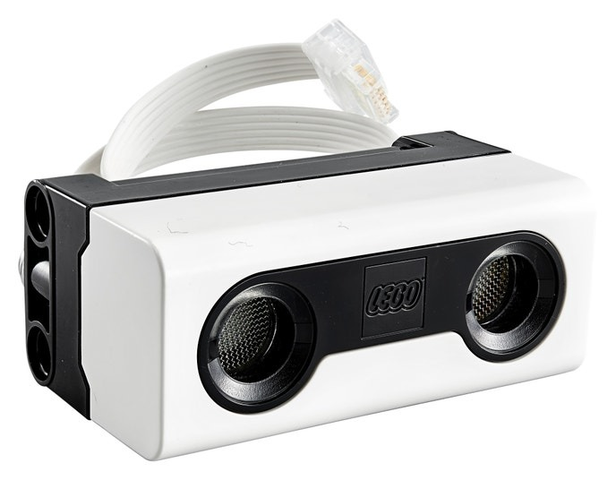

Un sensor ultrasónico funciona emitiendo ondas sonoras de alta frecuencia y midiendo el tiempo que tarda la onda en rebotar en un objeto y regresar al sensor. Este tiempo, combinado con la velocidad del sonido, permite calcular la distancia al objeto. Velocidad del sonido = distancia / tiempo; distancia =Velocidad . tiempo / 2. El tiempo lo dividimos entre 2 ya que si no nos daría la distancia de ida y vuelta, y por tanto sería el doble. De esta manera los bloques de programación de Lego Spike calculan la distancia a un objeto.
